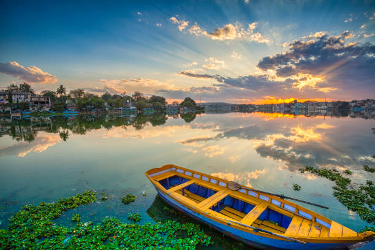

ABOUT

According to the local folklore, Bhojtal is said to have been built by the Paramara Raja Bhoj during his tenure as a king of Malwa (1005–1055). He is also said to have established the city of Bhopal (also named after him, then as Bhojpal) to secure the eastern frontier of his kingdom. There is a legend why they built the lake. Once king Bhoj suffered from skin disease and all Vaidyas (Doctor in English) failed to cure him. Then, one day a saint told the king to build a tank to combine 365 tributaries and then have a bath in it to wipe out the skin disease. Bhoj called upon his engineers to build up a huge tank. They spotted a place near river Betwa, which was 32 km away from Bhopal. It was found that it has only 359 tributaries. A Gond Commander Kalia fulfilled this shortage. He then gave the address of an invisible river. After merging the tributaries of this river the number 365 was completed.
The lake was created by constructing an earthen dam across the Kolans River. An eleven gate dam called the Bhadbhada dam was constructed at Bhadbhada in 1965 at the southeast corner of the Lake, and now controls the outflow to the river Kaliasote.